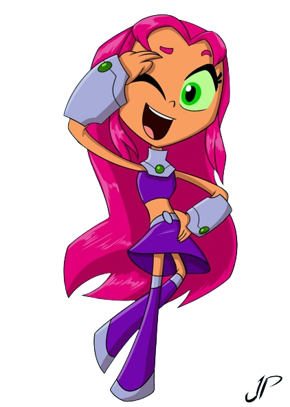
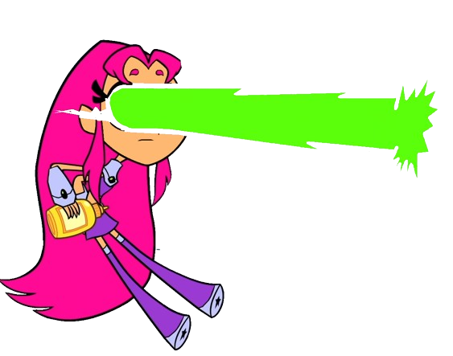
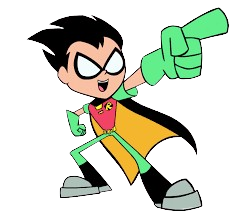
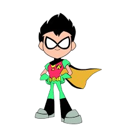

Raven is a member of the Teen Titans and one of the five main Her magical, psionic and demonic-inherited powers from her father, Trigon, are a significant asset to the team, but when not in combat, she generally prefers to keep to herself.


Starfire
Starfire is a Tamaranean and as such her physiology is designed to constantly absorb ultraviolet radiation. The radiation is then converted to pure energy, allowing her to fly at supersonic speeds.


Robin
Robin is the leader and the only Titan who does not possess any superpowers. He primarily relies on his arsenal of weapons and tools during combat.
References
Teen Titans Go! Wiki | Fandom. (n.d.). https://teen-titans-go.fandom.com/wiki/Teen_Titans_Go!_Wiki